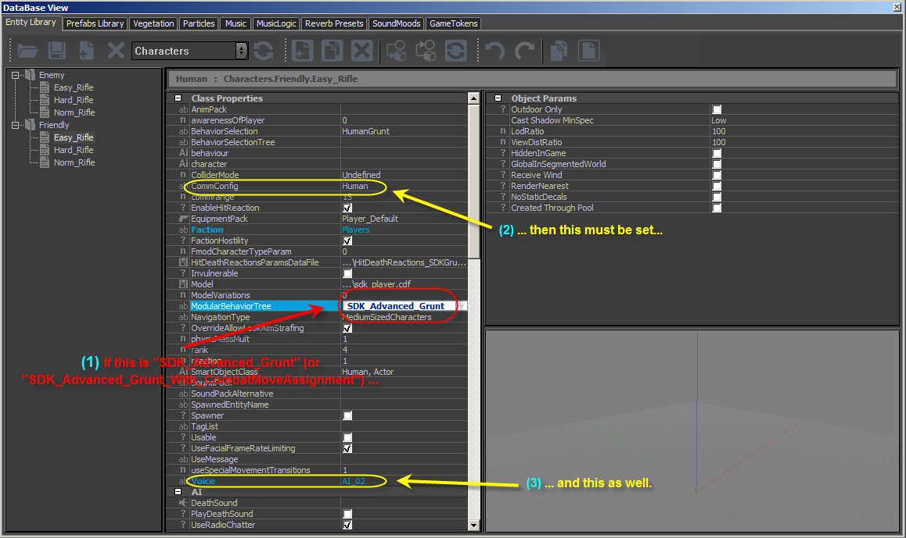

Обзор
AI Общение заключается в воспроизведении звука/голоса и/или анимации в нужное время в ходе игры.
Обратите внимание, что анимация общения не воспроизводится, если AI в данный момент выполняет действие смарт-объекта.
Пример
Чтобы фактически вызвать сообщение (событие), используйте golop "".
Например:
<GoalPipe name="Cover2_Communicate">
<Communicate name="comm_welcome" channel="Search" expirity="0.5"/>
</GoalPipe>
- имя — это имя фактического сообщения (звук/голос и/или анимация). Возможные коммуникации определяются файлом XML, в котором свойство CommConfig об этом относится AI.
- канал — это имя канала связи, который использует этот AI. Канал должен быть определен в каком-нибудь файле XML, который находится в
Game/Scripts/AI/Communication. - истечение срока действия (срок действия) — максимально допустимая задержка запуска данной связи (когда канал связи временно занят). Если связь не может быть запущена в течение этого периода времени, она аннулируется.
Каналы связи
Канал связи определяет, может ли AI воспроизводить сообщение в данный момент, в зависимости от того, активен ли канал связи. оккупированный или нет.
А иерархия Каналов связи определяют, какие другие каналы связи (а именно, родитель Каналы связи) также заняты, когда ребенок Канал связи занят.
Позвольте мне подчеркнуть, что канал связи — это полностью самостоятельная концепция, независимая от каких-либо других AI концепций коммуникации. Его единственная цель — находиться в одном из двух состояний: оккупированный или бесплатно.
Пример
<Communications>
<ChannelConfig>
<Channel name="Global" minSilence="1.5" flushSilence="0.5" type="global">
<Channel name="Group" minSilence="1.5" flushSilence="0.5" type="group">
<Channel name="Search" minSilence="6.5" type="group"/>
<Channel name="Reaction" priority="2" minSilence="2" flushSilence="0.5" type="group"/>
<Channel name="Threat" priority="4" minSilence="0.5" flushSilence="0.5" type="group"/>
</Channel>
<Channel name="Personal" priority="1" minSilence="2" actorMinSilence="3" type="personal"/>
</Channel>
</ChannelConfig>
</Communications>- имя
- приоритет
- minSilence: Минимальное время (в секундах), в течение которого канал остается занятым после завершения связи.
- flushSilence: Время (в секундах), в течение которого канал остается занятым после очистки канала. Он используется для override установленного времени молчания для канала, который больше не воспроизводит сообщение. Если этот атрибут не указан, значение minSilence используется.
- actorMinSilence: Минимальное время (в секундах), позволяющее актерам AI воспроизводить голосовые библиотеки после начала общения.
- ignoreActorSilence: Игнорировать ограничения связи актера (AI) из сценария.
- тип: личный, группа, или глобальный.
Конфигурации связи
Конфигурация связи определяет, какие коммуникации (и как) может воспроизводить AI. Конкретная конфигурация связи назначается AI с использованием его свойства CommConfig.
Пример
<Communications>
<!--Animation + Sound Event example (needs state using the action/signal in the animation graph)-->
<Config name="Surprise">
<Communication name="comm_anim" finishMethod="animation" blocking="all" forceAnimation="1">
<Variation animationName="Surprise" soundName="sounds/interface:player:heartbeat" />
</Communication>
</Config>
<!--Sound Event example-->
<Config name="Welcome">
<Communication name="comm_welcome" finishMethod="sound" blocking="none">
<Variation soundName="sounds/dialog:dialog:welcome" />
</Communication>
</Config>
</Communications>Атрибуты конфигурации
- имя: имя конфигурации связи, которое можно присвоить AI с помощью его свойства. CommConfig.
Каждая конфигурация связи должна содержать хотя бы одно сообщение с использованием любого тега <Communication>.
Атрибуты связи
- имя
- choiceMethod: Метод, используемый для выбора варианта: Случайный, Последовательность, RandomSequence, или Матч (только первый вариант).
- responseName
- responseChoiceMethod: Похоже на choiceMethod
- forceAnimation
Каждое Сообщение должно содержать хотя бы одну вариацию.
Атрибуты вариаций
- animationName: Входное значение графика анимации.
- soundName
- voiceName
- lookAtTarget: 1/0, правда/ложь или да/нет. Заставляет AI посмотреть на цель.
- finishMethod: Любое или все из: анимация, звук, голос, тайм-аут, все. Он определяет способ определения момента завершения связи — после завершения анимации или по истечении временного интервала и т. д.
- блокировка: Любое или все из: движение, огонь, все, нет. Это позволяет отключить движение и/или стрельбу AI.
- animationType: сигнал или действие
- тайм-аут
Голосовые библиотеки
Для поддержки локализованных диалогов, субтитров и синхронизации губ необходимы голосовые библиотеки. Правильные голосовые библиотеки можно назначить нужным ИИ (или архетипам сущностей) с помощью свойства esVoice.
Голосовая библиотека — это файл Excel XML, который находится в GameSDK/Libs/Communication/Voice. Его формат такой же, как в примере (GameSDK/Libs/Communication/Voice/npc_01_example.xml).
Язык | Американский английский | |
Путь к файлу | языки/диалог/ai_npc_01/ | |
Сигнал | Звуковой файл | SDK NPC 01 Пример |
|---|---|---|
увидеть | ||
see_player_00 | я вижу тебя | |
see_player_01 | эй, вот ты где | |
see_player_02 | эй, я искал тебя | |
боль | ||
pain_01 | ой | |
pain_02 | ой | |
pain_03 | ой | |
pain_04 | ой | |
pain_05 | ой | |
смерть | ||
death_01 | аааа | |
death_02 | аааа | |
death_03 | аааа | |
death_04 | аааа | |
death_05 | аааа | |
предупрежден | ||
alerted_00 | watch_out | |
alerted_01 | будь осторожен | |
alerted_02 | что-то там |
Американский английский определяет локализацию, к которой принадлежит эта голосовая библиотека.
Localization/<language>/dialog/ai_npc_01/ это путь, по которому на самом деле находятся файлы (2-й столбец).
Для каждого сообщения (1-й столбец) — «видеть», «боль», «смерть» и «предупреждение» — предусмотрено несколько вариантов.
Третий столбец предназначен только для комментариев.
Flow Graph Узел
Для запуска связи с использованием логики Flow Graph узел Flow Graph "AI:Общение"Можно использовать.
Стартап
При запуске папка Game/Scripts/AI/Communication и все подпапки сканируются на наличие файлов XML, содержащих конфигурации каналов и конфигурации связи.
SDK включает в себя два базовых файла конфигурации XML:
- BasicCommunications.xml
- ChannelConfig.xml
Отключение анимации и/или голоса
Анимацию и/или голос при общении можно отключить с помощью сценария Lua AI или свойств объекта в Sandbox:
Readability =
{
bIgnoreAnimations = 0,
bIgnoreVoice = 0,
},
Отладка
Чтобы получить отладочную информацию о связи AI, доступны следующие переменные CVar (при условии, что ai_DebugDraw равно 1):
- ai_DebugDrawCommunication
- ai_DebugDrawCommunicationHistoryDepth
- ai_RecordCommunicationStats
Отладочный вывод на консоль:
Воспроизведение общения: comm_welcome[3007966447] от имени playID[84]
CommunicationPlayer::PlayState: Все готово! commID[-1287000849]
CommunicationManager::OnCommunicationFinished: comm_welcome[3007966447] как playID[84]
CommunicationPlayer удалено, завершено: comm_welcome[3007966447] как playID[84] с прослушивателем[20788600]
Реализация
Код коммуникационного менеджера находится в CryAISystem и CryAction:
CryAISystem (Code/CryEngine/CryAISystem/Communication/):
- Communication.h: Определения канала, коммуникации и вариации.
- CommunicationChannel.h/.cpp
- CommunicationChannelManager.h/.cpp
- CommunicationManager.h/.cpp: Загрузка конфигураций, отображение отладочной информации.
- CommunicationPlayer.h/.cpp: Запуск связи
- CommunicationTestManager.h/.cpp: Простая система тестирования для Communication Manager.
CryAction (Code/CryEngine/CryAction/AI/):
- CommunicationHandler.h/.cpp: Воспроизведение звуковых событий, настройка входов Animation Graph.
- CommunicationVoiceLibrary.h/.cpp
- CommunicationVoiceTestManager.h/.cpp: Простая система тестирования для голосовых библиотек.
Устранение неполадок
[Предупреждение] Общайтесь(77) [Дружелюбный.Norm_Rifle1] Не удалось начать связь
Вы можете увидеть сообщение, подобное приведенному выше, если дерево поведения вашего AI вызывает связь, но конфигурация связи настроена неправильно.
В данном случае «77» относится к строке в GameSDK/Scripts/AI/BehaviorTrees/SDK_Advanced_Grunt.xml Скрипт дерева поведения:
<Communicate name="TargetSpottedWhileSearching" channel="Reaction" expirity="1.0" waitUntilFinished="0" />Этот атрибут TargetSpottedWhileSearching определен в GameSDK/Scripts/AI/Communication/HumanCommunication.xml сценарий:
<Communication name="TargetSpottedWhileSearching" finishMethod="voice" blocking="none">
<Variation voiceName="TargetSpottedWhileSearching"/>
</Communication>Итак, если ваш персонаж AI использует это модульное дерево поведения, но не имеет установленной конфигурации связи «Человеческий», произойдет вышеуказанная ошибка.

Вам также следует выбрать «Голос», который будет использоваться для общения. В данном случае AI_02. Этот контент обсуждался ранее в этой статье здесь: VoiceLibraries